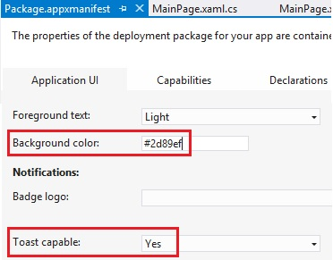

The following code snippet shows how to create a simple, text-only toast notification:
// Get content of a predefined toats template var toastXaml = ToastNotificationManager.GetTemplateContent(ToastTemplateType.ToastText01); // Get the text element of the template and set the required content var toastTextElements = toastXaml.GetElementsByTagName("text"); toastTextElements[0].AppendChild(toastXaml.CreateTextNode("New content available in my app!")); // Create a toast notification var toast = new ToastNotification(toastXaml); // Display the notification immediately ToastNotificationManager.CreateToastNotifier().Show(toast);
The color of the toast notification is the background color set in the app's manifest. Also, note that you must ensure that toast notifications are turned on in the app's manifest, or notifications will not appear:
